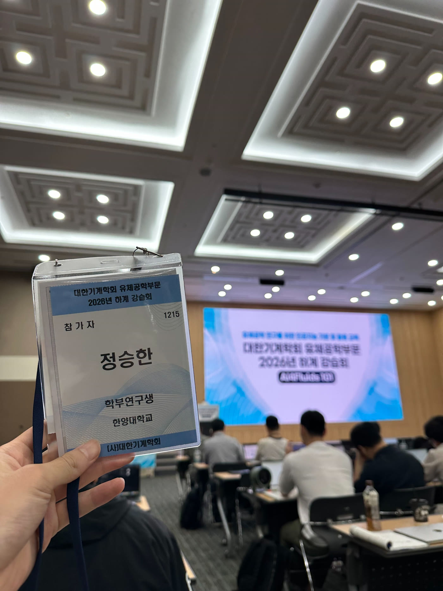

2026년 8월 19일 – 21일IDEA 교육: AI4Fluids ’101 하계 강습회 참가
정승한 연구원이 대한기계학회 유체공학부문이 주최한 「2026 하계 강습회 AI4Fluids ’101」에 참가했습니다. 유체공학 연구에 필요한 인공지능 기초부터 최적화·물리기반 AI, Agentic AI 활용까지 폭넓은 교육을 이수했습니다.
- 주최
- 대한기계학회 유체공학부문
- 일시
- 2026년 8월 19일 – 21일
- 장소
- 대구 EXCO 서관 3층 325호
- 주요 교육
- 인공지능 기초, 최적화 및 물리기반 AI, Agentic AI와 유체공학 연구 활용
참가자 후기
정승한 — ANN, RNN, Transformer 등 LLM의 기본 원리를 코드와 함께 학습해 흥미로웠습니다. 특히 Agentic AI와 Harness 구조에 관한 강의가 현재 진행 중인 프로젝트와 밀접하게 연결되어 있어 유익했으며, 배운 내용을 바탕으로 프로젝트를 더욱 깊이 발전시키고 싶다는 동기를 얻었습니다.